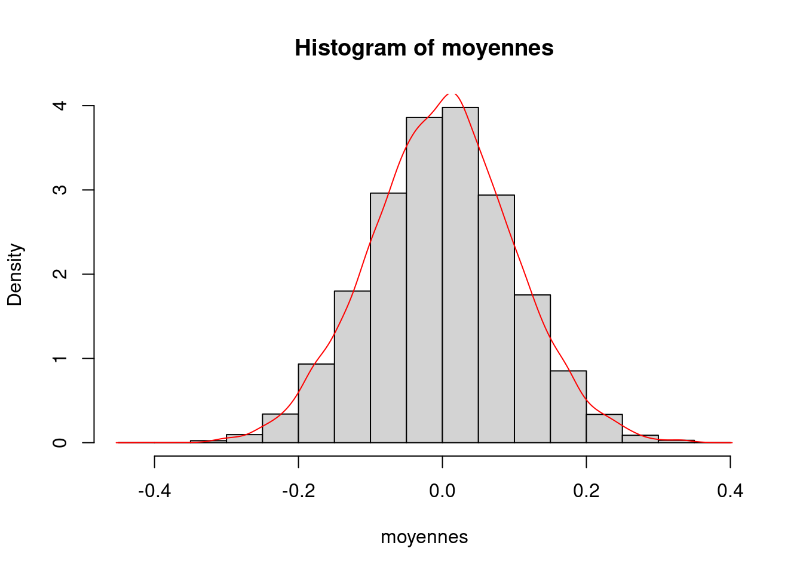
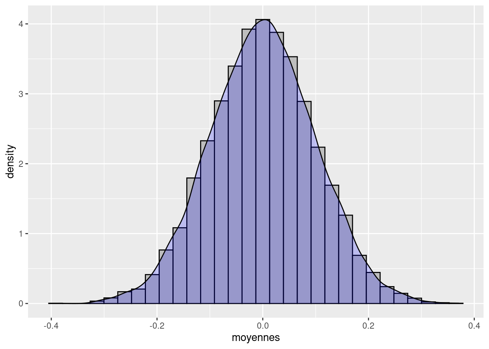
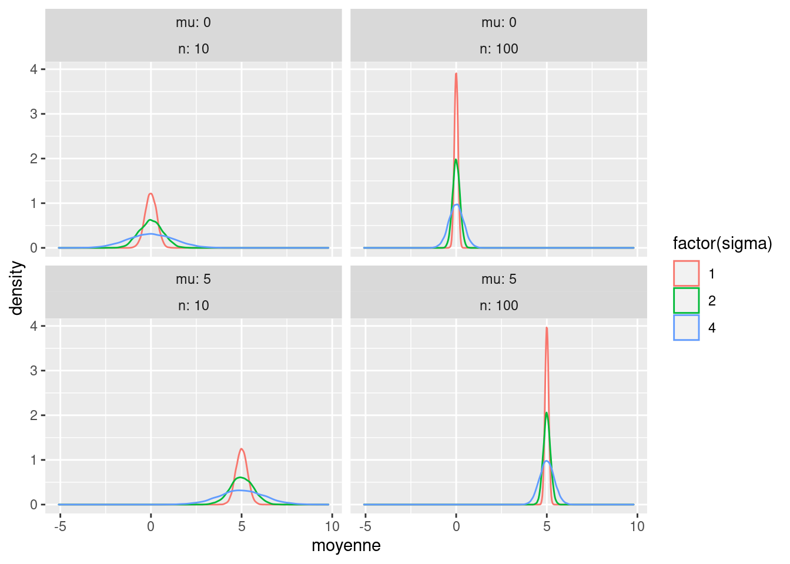
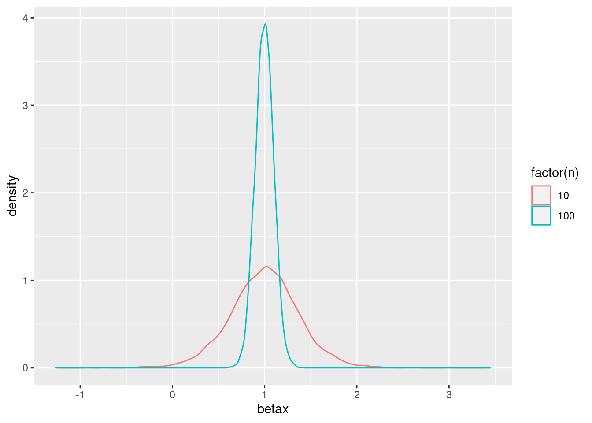

4 Simulations de Monte-Carlo
Il est souvent utilse de faire des simulations de Monte-Carlo afin d’étudier les propriétés des estimateurs que nous rencontrerons, et de “visualiser” leurs comprtements. Ces propriétés (biais, convergence, efficacité etc.) sont des propriétés statistques qui ont trait à la distribution des estimateurs, vus comme une variables aléatoire. Une simulation de Monte-Carlo consiste en quelque sortes à tirer plein de valeurs de ces variables aléatoires afin d’étudier leurs distribution.
4.1 Un premier exemple
Votre cours de statistrique et de probabilité vous a (normalement) appris que la moyenne d’un échantillon de taille \(n\) issu d’une loi Normale \(N(\mu,\sigma^2)\) de moyenne \(\mu\) et d’écart-type \(\sigma\) est une variable aléatoire suivant une loi normale de moyenne \(\mu\) et d’écart-type \(\frac{\sigma}{\sqrt{n}}\). Utilisons R pour le vérifier.
Commençons par calculer la moyenne d’un échantillon de 100 tirages d’une \(N(0,1)\)
## [1] -0.03247968On voit que la moyenne des 100 tirages n’est pas strictement égale à 0, et on ne voit pas bien comment juger de l’écart-type ou de la loi de probabilité de cette moyenne. Si on lance le code une seconde fois, le résultat va d’ailleurs changer :
## [1] -0.1270524La raison est que la théorie nous donne les caractéristiques de la distribution de cette moyenne au travers d’un grand nombre d’échantillons de 1000 tirages d’une \(N(0,1)\). Nous allons donc répéter le code ci-dessous un grand nombre de fois (\(K\) fois), noter à chaque fois la moyenne obtenue, et étudier la distribution de ces \(K\) moyennes
K <- 10000 # On va faire 10000 réplications, on aura donc 10000 moyennes
n <- 100
mu <- 0
sigma <- 1
moyennes <- c() # On crée un vecteur vide qui contiendra les K moyennes
for (i in 1:K) { # on initialise la boucle
x <- rnorm(n,mean=mu,sd=sigma) # on tire l'ééchantillon
moyennes[i] <- mean(x) # on stocke la moyenne issue de la ième réplication à
# la ième position du vecteur "moyennes"
}
moyennes[1:10] # on affiche les 10 premières moyennes## [1] 0.04282867 0.21528147 -0.09064180 -0.02316018 0.01417983 0.01698663
## [7] 0.17348736 -0.01235884 0.23749812 -0.11105861## [1] 8.68277e-05## [1] 0.09931357## [1] 0.1hist(moyennes,prob=TRUE) # on trace l'histogramme des moyennes
lines(density(moyennes),col="red") # on y ajoute le tracé de la densité des moyennes
Ceux qui ont suivi le tutoriel “Visualize Data” peuvent utiliser les outils graphiques du package ggplot2
library(ggplot2)
ggplot(mapping=aes(x=moyennes)) +
geom_histogram(aes(y=..density..),fill="grey",color="black") +
geom_density(fill="blue",alpha=0.2)
NB : le y=..density.. indique à geom_histogram d’utiliser la densité en ordonnées, au lieu de la fréquence. Ça permet d’avoir l’histogramme et la courbe des densité à la même échelle.
On constate que 1. La moyenne des K=10000 moyennes est très proche de la moyenne théorique (0) 2. L’écart-type des K moyennes est très proche de l’écart-type théorique (0.1) 3. La distribution est proche de celle d’une loi normale
4.2 Généralisation : le package MonteCarlo
L’exemple précédent a montré que l’on pouvait assez facilement effectuer une simulation basique avec du code assez simple. Néanmoins, ce code ne permet de simuler qu’un seul scénario (valeurs de \(n\), de \(\mu\) et de \(\sigma\)) à la fois. Si on souhaite voir ce qu’il se passe lorsqu’on fait varier les paramètres de la simulation, il faudrait copier-coller le code de nombreuses fois et modifer à chaque fois les paramètres. De plus, il faudrait faire attention à sauvegarder les résultats dans des vecteurs différents à chaque fois. Afin de s’éviter ces désagréments, le package MonteCarlo permet d’automatiser ces tâches pour nous.
On commence par charger le package MonteCarlo ainsi que tidyverse (voir les tutoriels)
library(MonteCarlo) # doit avoir package Rcpp installé
library(tidyverse) # charge plein d'outils utiles, voir les tutoriels sur rstudio.cloudOn définit ensuite une fonction qui va effectuer le tirage de l’échantillon aléatoire, calculer la moyenne, et retourner le résultat :
simul_moyenne <- function(n,mu,sigma) { # Notre fonction s'appelle "simul_moyenne" et prend les
# arguments n, mu et sigma
tirages <- rnorm(n,mean=mu,sd=sigma) # on effectue le tirage aléatoire avec les valeurs données en argument
moy <- mean(tirages) # on calcule la moyenne
return(list("moyenne"=moy)) # on la retourne dans une liste nommée "moyenne"
}On définit ensuite des vecteurs qui vont définir l’ensemble des “scénarios” de simulations, c’est à dire les valeurs des paramètres que l’ont veut faire varier. Ici on veut deux valeurs pour la taille d’échantillon, deux valeurs pour l’espérance, et trois pour l’écart-type
On indique ensuite que le programme devra passer toutes les combinaisons de ces valeurs en tant qu’arguments à notre fonction “simul_moyenne”
On peut maintenant lancer MonteCarlo en lui indiquant quelle fonction utiliser, le nombre de réplications par scénario, et où trouver la liste des paramètres. On stocke les résultats dans un objet nommé “résultats”
Regardons ce que l’objet “résultats” contient :
## Simulation of function:
##
## function(n,mu,sigma) { # Notre fonction s'appelle "simul_moyenne" et prend les
## # arguments n, mu et sigma
## tirages <- rnorm(n,mean=mu,sd=sigma) # on effectue le tirage aléatoire avec les valeurs données en argument
## moy <- mean(tirages) # on calcule la moyenne
## return(list("moyenne"=moy)) # on la retourne dans une liste nommée "moyenne"
## }
## <bytecode: 0x55fc6ee7d2b8>
##
## Required time: 1.74 secs for nrep = 10000 repetitions on 1 CPUs
##
## Parameter grid:
##
## n : 10 100
## mu : 0 5
## sigma : 1 2 4
##
##
## 1 output arrays of dimensions: 2 2 3 10000On va le transformer les parties pertinentes en data frame (voir les tutoriels) pour une manipulation plus aisée. la fonction head() permet ensuite de lister les premières lignes d’une data frame, afin de vérifier rapidement son contenu.
## n mu sigma moyenne
## 1 10 0 1 0.27948975
## 2 100 0 1 0.01071684
## 3 10 5 1 5.00136716
## 4 100 5 1 4.96968491
## 5 10 0 2 1.05192122
## 6 100 0 2 0.36621319On va maintenant calculer les moyennes et écart-types des 10000 moyennes calculées pour chaque scénario de simulation. On fait appel aux outils de “pipe” (%>%) et de groupe (group_by()) expliqués dans le tutoriel “Work With Data”. On en profite pour ajouter une variable “ecty_theor” donnant l’écart-type théorique de la distribution des moyennes
data_resultats %>%
mutate(ecty_theor=sigma/sqrt(n)) %>%
group_by(n,mu,sigma) %>%
summarise(moy=mean(moyenne),ecty=sd(moyenne),ecty_theor=mean(ecty_theor))## # A tibble: 12 x 6
## # Groups: n, mu [4]
## n mu sigma moy ecty ecty_theor
## <dbl> <dbl> <dbl> <dbl> <dbl> <dbl>
## 1 10 0 1 0.00450 0.317 0.316
## 2 10 0 2 0.000765 0.631 0.632
## 3 10 0 4 0.000930 1.27 1.26
## 4 10 5 1 5.00 0.315 0.316
## 5 10 5 2 5.00 0.632 0.632
## 6 10 5 4 5.00 1.25 1.26
## 7 100 0 1 0.000331 0.0990 0.1
## 8 100 0 2 0.00493 0.200 0.2
## 9 100 0 4 0.00267 0.403 0.4
## 10 100 5 1 5.00 0.0992 0.1
## 11 100 5 2 5.00 0.198 0.2
## 12 100 5 4 5.00 0.401 0.4On constate que la moyenne des moyenne (colonne “moy”) est très proche de la moyenne théorique (“mu”), de même que l’écart-type de la distribution des moyennes (“ecty”) est très proche de l’écart-type théorique. Nos observations semblent bien coller avec la théorie.
On complète l’exercice en faisant un graphique de la fonction de densité estimées de nos résultats, pour chaque valeur de \(n\), \(\mu\) et \(\sigma\).
ggplot(data=data_resultats,mapping=aes(x=moyenne,group=sigma,color=factor(sigma))) +
geom_density() +
facet_wrap(mu ~ n,labeller=label_both)
4.3 Avec une régression par MCO
R permet de faire une régression linéaire par MCO avec la commande lm()(voir le chapitre sur la répression par MCO) ci-dessous
On va charger une base de données préinstallée avec R : les données “mtcars”
## mpg cyl disp hp drat wt qsec vs am gear carb
## Mazda RX4 21.0 6 160 110 3.90 2.620 16.46 0 1 4 4
## Mazda RX4 Wag 21.0 6 160 110 3.90 2.875 17.02 0 1 4 4
## Datsun 710 22.8 4 108 93 3.85 2.320 18.61 1 1 4 1
## Hornet 4 Drive 21.4 6 258 110 3.08 3.215 19.44 1 0 3 1
## Hornet Sportabout 18.7 8 360 175 3.15 3.440 17.02 0 0 3 2
## Valiant 18.1 6 225 105 2.76 3.460 20.22 1 0 3 1Effectuons une régression linaire de, par exemple, “mpg” sur “cyl” et “disp”
##
## Call:
## lm(formula = mpg ~ cyl + disp, data = mtcars)
##
## Coefficients:
## (Intercept) cyl disp
## 34.66099 -1.58728 -0.02058La sortie est assez minimale. Stockons cette régression dans un objet que nous appellerons “ma_regression” et faisons un summary() de ce dernier
##
## Call:
## lm(formula = mpg ~ cyl + disp, data = mtcars)
##
## Residuals:
## Min 1Q Median 3Q Max
## -4.4213 -2.1722 -0.6362 1.1899 7.0516
##
## Coefficients:
## Estimate Std. Error t value Pr(>|t|)
## (Intercept) 34.66099 2.54700 13.609 4.02e-14 ***
## cyl -1.58728 0.71184 -2.230 0.0337 *
## disp -0.02058 0.01026 -2.007 0.0542 .
## ---
## Signif. codes: 0 '***' 0.001 '**' 0.01 '*' 0.05 '.' 0.1 ' ' 1
##
## Residual standard error: 3.055 on 29 degrees of freedom
## Multiple R-squared: 0.7596, Adjusted R-squared: 0.743
## F-statistic: 45.81 on 2 and 29 DF, p-value: 1.058e-09On a déjà plus de détails.
On peut extraire divers éléments issus de lm() :
## (Intercept) cyl disp
## 34.66099474 -1.58727681 -0.02058363## (Intercept) cyl disp
## 2.54700388 0.71184427 0.01025748## cyl
## -1.587277## [1] -1.587277On va maintenant utiliser ces éléments pour construire une simulation de Monte-Carlo de la distribution de l’estimateur des MCO \(\hat\beta_x\) dans un cadre qui respecte les hypothèses de Gauss-Markov
library(MonteCarlo) # doit avoir package Rcpp installé
library(tidyverse)
betareg<-function(n) {
x <- rnorm(n,mean=0,sd=1)
epsilon <- rnorm(n,mean=0,sd=1) # epsilon suit une loi normale non corrélée à x
y <- 1+x+epsilon
mareg <- lm(y~x)
coeffs <- summary(mareg)$coef[,"Estimate"]
betax <- coeffs[["x"]]
return(list("betax"=betax))
}
n_grid<-c(10,100)
param_list=list("n"=n_grid)## Simulation of function:
##
## function(n) {
## x <- rnorm(n,mean=0,sd=1)
## epsilon <- rnorm(n,mean=0,sd=1) # epsilon suit une loi normale non corrélée à x
## y <- 1+x+epsilon
## mareg <- lm(y~x)
## coeffs <- summary(mareg)$coef[,"Estimate"]
## betax <- coeffs[["x"]]
## return(list("betax"=betax))
## }
## <bytecode: 0x55fc6e3cfb78>
##
## Required time: 14.46 secs for nrep = 10000 repetitions on 1 CPUs
##
## Parameter grid:
##
## n : 10 100
##
##
## 1 output arrays of dimensions: 2 10000## n betax
## 1 10 1.4697435
## 2 100 0.9905716
## 3 10 1.0533390
## 4 100 1.1352285
## 5 10 1.3121881
## 6 100 1.2713152## # A tibble: 2 x 3
## n moy ecty
## <dbl> <dbl> <dbl>
## 1 10 0.998 0.377
## 2 100 0.999 0.100
Les résultats ci-dessus sont-ils ceux que l’on s’attendait à avoir ? Que nous dit la théorie ?